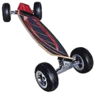
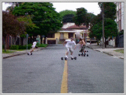
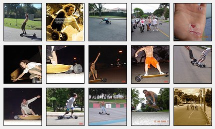

O carve (pronuncia-se "cárve") é um skate "big foot". A prancha é composta por lâminas de madeira, como os skates, porém é grande, maior que a dos skates longboard, e côncava. O truck é de alumínio com duas molas cada e os pneus são de borracha, com câmara de ar (30 lbs).
Para mudar a direção num skate normal, você pisa na traseira, levanta o bico e gira o corpo. No carve é impossível esse movimento, os quatro pneus sempre ficam no chão. A curva se dá de maneira natural, bastando inclinar o corpo para o lado desejado.


Carve = Cavada = Surfar no asfalto
Ao se inclinar, as molas do truck cedem e a prancha deita. O detalhe é que além disso o truck também muda o ângulo das rodas na dianteira e traseira, fazendo um arco que define a circunferência da curva. Pense num carro estacionando, mas com os pneus traseiros virando também. Quando maior a pressão nos pés, maior a inclinação do corpo e mais fechada é a curva.
Com esse mecanismo de pressão e com os pés sempre apoiados na prancha, é possível fazer curvas realmente fechadas, e essa é a essência do brinquedo: a cavada. O carve não serve para velocidade (o truck é muito mole e a queda é inevitável), mas sim para fazer zigue-zagues, cavando. O movimento é idêntico à cavada do surfe, tanto de frontside quanto de backside. Com os pneus bem cheios é possível dar slides (com ou sem grab) que lembram as batidas na onda.
Carveboard é o verdadeiro surfe de asfalto.
Fotos
 Clique no painel para ver estas e outras fotos, em tamanho maior.
Slides - Curitiba 2004 Mais de 40 fotos embaladas pela sonzeira do Tequila Baby.
Vídeos
Carve é movimento.
Não se contente com fotos, veja os vídeos!
Carveboard Curitiba 2004 Uma coletânea do pessoal andando em Curitiba,
ano de 2004, os primórdios do carve na cidade
com sonzeira do RAMONES de fundo.
Para dar o impulso inicial, é preciso algumas pedaladas no chão, como em um skate normal. Só que no carve os pneus são largos e ficam para fora da tábua, então lembre-se de pedalar com as pernas bem abertas para não machucar o calcanhar. Lembre também que o truck é mole, então pise bem no meio da tábua.
Frenagem
O carve não tem freio. Para diminuir a velocidade, faça curvas. Quanto maior a pressão na curva, mais ele freiará. Para parar, faça um zerinho. Para parar imediatamente, só com uma rasgada (slide, arrasto de pneus), mas essa manobra requer treino.
Aceleração
Para acelerar, basta ir reto e se beneficiar dos efeitos da gravidade. Para acelerar em uma rua sem muita inclinação, faça curvas rápidas e pequenas, colocando bastante pressão na perna da frente, aliviando a de trás.
Velocidade mínima
Assim como é muito difícil se equilibrar em uma bicicleta parada, o carve também precisa de uma velocidade mínima para que você possa ficar bem equilibrado. Então perca o medo e pedale com vontade.
Velocidade máxima
Não ultrapasse a velocidade máxima, aquela que você ainda se sente no controle do carve. Diferente de um skate longboard ou speed, o truck do carve é bem mole e com isso andar em velocidade alta é perigoso. O que geralmente acontece é o carve ficar instável, tremendo, e em poucos segundos você é ejetado :) Em caso de emergência, se você não souber dar uma rasgada forte, pule do carve e não tente segurá-lo. Preocupe-se em "aterrissar" em segurança.
Calibragem
Pneu cheio (30lbs) dá uma descida rápida, porém ele desgarra com mais facilidade. Pneu vazio (12 a 18lbs) dá mais aderência e controle, mas requer maior pressão na perna para poder pegar gás. Ao andar, o pneu pode murchar sozinho, igual os de carro e bicicleta. Então lembre de calibrar os pneus de vez em quando. Se o asfalto for muito irregular, pneu muito cheio vai ficar um sabão. Se for descer uma ladeira muito íngreme, murche bem os pneus.
Pneu com bico torto
Os bicos ficam tortos quando a câmera é colocada totalmente vazia dentro da roda. O certo é inflá-la um pouco, encaixar a roda e depois encher totalmente.
Troca das molas
Com o tempo as molas vão cansando e o carve vai ficando cada vez mais molão e instável. Compre um jogo novo de molas e use uma morsa com abertura de uns 10cm para fazer a troca.
Reboque
Andar rebocado é bom para subir a ladeira após o drop, mas também serve para manobrar em ruas planas e até subidas. Arranje uma corda de pelo menos uns três metros, faça alguns nós em uma ponta (para você segurar) e amarre a outra ponta no seu veículo preferido: bicicleta, jog, moto, carro. Só lembre de avisar o condutor para não exagerar na velocidade.
Picos
Curitiba
Rua Osvaldir CumanMAPA Em Santa Felicidade. Rua sem saída de inclinação moderada e asfalto novo. Bom para iniciantes. Encher bem os pneus (30 libras).
NazaréMAPA Drop longo em uma rua relativamente larga e movimentada.
Drop da GansMAPA Fica entre km 104 e 105 da Rodovia do Café. Fique atendo a sua direita, é na entrada da Metalúrgica Gans. A foto do mapa é antiga, pois agora está asfaltado. Pico muito bom e de pouco movimento. Inclinação suave com asfalto novo. Pressão dos pneus de 25 a 30 libras. Rua bem larga em alguns pontos. Ótimo drop.
Drop da Paz No retorno do km 113 da Rodovia do Café. Entra à direita, ao lado da empresa Komatsu. Rua da Sereia. Segue em frente até chegar na "Quinta da Paz". Drop forte no começo, bom para testar os nervos em acelerações rápidas. Pneus de 10 a 25 libras, dependendo da coragem do sujeito. Lugar bem tranqüilo e bonito.
Drop do Rio VerdeMAPA Km 110 da Rodovia do Café, depois da Gans, passa a passarela do Rio Verde e faz o retorno. Descida longa e suave, de 1km com asfalto tapete. Vá com o pneu bem cheio (30lbs).
Dona MercedesMAPA Asfalto tapetão. Tem que ir mais de noite porque tem movimento.
Drop da João MenegussoMAPA Santa Felicidade. Rua sem saída, comprida, com duas inclinações diferentes. A segunda é para quem tem mais experiência.
GuabirotubaMAPA Fica no próxima à pista do Guabirotuba, é uma descida de inclinação média, com uns 70m e pouco movimento. Para chegar lá, siga pela Avenida das Torres sentido São José dos Pinhais, entra à direita na Churrascaria Pertuti e vira na primeira à esquerda, Rua Joaquim Silveira da Mota. Desce até a Rua João Carlos de Souza Castro, a rua do pico.
Jardim SocialMAPA Av. Edgard Stelfeld, 1147. Um dos melhores picos da cidade até agora. Asfalto liso, rua larga, drop de pouco mais de uma quadra, iluminação boa, pouco movimento (qualquer horário).
Canaleta do Campo Comprido Canaleta do ônibus, entre o último tubo e o terminal do Campo Comprido. É estreito, mas com asfalto bom, para uma brincadeira leve. Se descer a partir do penúltimo tubo, o drop é mais longo.
Museu do OlhoMAPA No Museu Oscar Niemeyer tem estacionamento, banheiro e bebedouro. Tem um posto de gasolina na esquina para calibragem. Dá pra andar no próprio estacionamento (iniciantes), na rua lateral do museu (larga), e na terceira (asfalto bom, descida longa) e quarta (estreita e inclinada) ruas paralelas a essa lateral.
Conjunto Jardim SaturnoMAPA Rua Paulo de Deus Bessa, no Conjunto Saturno, Bairro Santo Inácio. Fica perto do Parque Barigüi, um pouco mais adiante pela 277, uns 50 metros após a passarela de pedestres (vire no ponto de ônibus). A rua é bem larga, com pouco movimento, boa inclinação e asfalto bom. Não é para iniciantes. Ótimo drop. Por causa da inclinação e da largura, tem-se uma ótima combinação. A pista te "joga" para a frente.
Secret Avenida das Torres sentido SJP - Curitiba, vira à direita na Souza Cruz, Rua Eng. Ademar Munhoz e depois vira na 1ª à direita na Rua Ivo Ferro (lugar do drop). Este pico tem duas descidas, um drop para cada lado da montanha, uma extremamente díficil nos primeiros metros depois fica em nível médio mas é maneira, a outra que é a mesma rua mas que desce para o outro lado e é de nivel médio a fácil. O drop é de uma quadra seja qual for o lado escolhido, a largura é de 7 carves (o Saturno é 10 carves) e o asfalto é bom.
Estacionamento do Restaurante Madalosso Fica em Santa Felicidade, você sabe :) Drop largo, monstruoso. Bom para andar bem cedo ou ao final da tarde, fora dos horários de pico do restaurante.
Parque Barigüi Vários picos para dropar. No estacionamento da Cândido Hartmann cada baia tem uma inclinação diferente, bom para iniciantes. Seguindo pela rua do parque, tem uma descida hardcore na esquina da casa com trepadeiras (e mini estacionamento de carros). Seguindo mais adiante, perto do final quando termina a rua, a última descida é boa.
Pista do São LourençoMAPA Fica dentro do Parque São Lourenço. Tem que dividir espaço com os rolimãs, skates e rollers e é estreita demais. Utilizar apenas em caso de necessidade extrema :)
Velódromo do Capanema Anexo ao Jardim Botânico, é uma pista oval de ciclismo, com paredes inclinadas. O drop parece com uma onda, mas é proibido para qualquer veículo fora bicicletas e tem policiamento. Se prepare para um drop rápido ;)
São José dos Pinhais
González Drop irado, de seis quadras, com várias transições, calçadas e entradas, com variações de velocidade.
Panelão O panelão é o encontro de três ruas, em forma de X com um risco no meio. Por causa disso fica uma IMENSA área para andar (no panelão). A inclinação nele é de uns 3 tipos, bem interessante.
Malhada Fica no interior, perto da Brose, no caminho das praias. Tem diversos picos lá, estrada rural, visual bonito. Bom para ir nos sábados ou domingos de manhã.
Brose É bem pequeno, sem movimento, asfalto quase tapete. Bom para um relax antes de voltar para casa, quando sair da malhada.
Pico do Cantinho da ChinaMAPA Rua Zacarias Alves Pereira da Cruz, foi a rua onde se realizou o
Primeiro Campeonato Paranaense de Carveboard. Inclinação ideal, asfalto excelente. Mas é uma rua movimentada, escolha horários alternativos.
Matinhos
Praia Brava Uma descida leve, na beira da praia, bem em frente à Praia Brava. Vindo pela Atlântica, é a antepenúltima rua antes do fim da avenida. É ruim, mas na fissura serve.
Iate Clube Caiobá Lá no fim da praia, antes de subir o morro para ir em direção ao Ferry Boat. É rua da frente do Iate Clube, que antes tinha saída para a rodovia mas agora é uma rua sem saída. Asfalto ruim, mas não tem movimento e a inclinação é boa.
{kind=link}